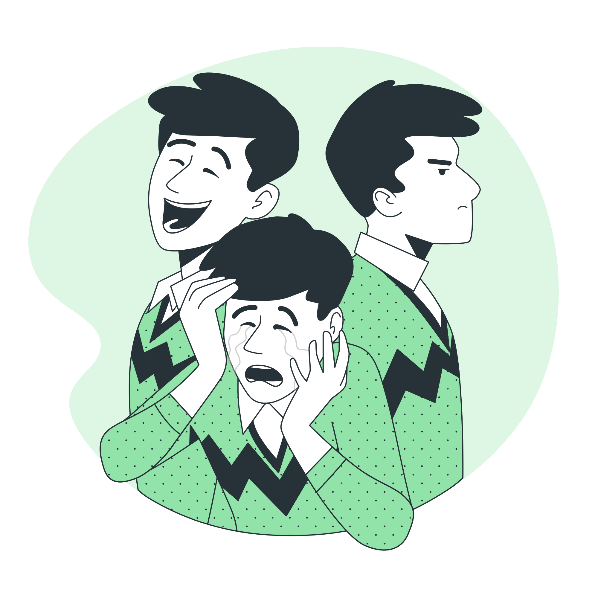

A NR 17 exige que os ambientes de trabalho sejam projetados de maneira a reduzir o estresse físico e psicológico. Isso inclui, por exemplo, garantir que os trabalhadores tenham pausas regulares e que as jornadas de trabalho não sejam excessivas. Um ambiente sobrecarregado e mal adaptado, com jornadas longas e sem intervalos adequados, pode levar ao esgotamento mental, estresse e aumento da pressão psicológica. A NR 17 visa justamente evitar esses excessos.
2. Condições Adequadas de Trabalho
A norma determina que as condições ambientais, como iluminação, ruído e temperatura, sejam apropriadas. Ambientes muito barulhentos, mal iluminados ou com temperaturas extremas podem aumentar o desconforto físico e psicológico dos trabalhadores, contribuindo para a fadiga mental e o estresse. Ambientes de trabalho mais confortáveis e agradáveis têm um impacto direto na saúde mental, promovendo um clima de trabalho mais tranquilo e produtivo.

Imagem 1: Posto de trabalho ergonômico com ajustes adequados.
3.Prevenção de Lesões e Doenças Físicas
Embora a NR 17 trate essencialmente de ergonomia física, ela também tem um impacto indireto na saúde mental. Lesões físicas, como problemas de coluna, tendinites ou lesões por esforço repetitivo, podem gerar dores crônicas, que afetam o bem-estar emocional do trabalhador. A norma busca prevenir essas condições ao garantir que os móveis e equipamentos sejam adequados, reduzindo o risco de lesões e, consequentemente, evitando o sofrimento psicológico associado à dor física e à incapacidade para o trabalho.
4. Apoio à Integração entre Corpo e Mente
Ao incentivar o design de postos de trabalho ergonômicos, a NR 17 favorece a adaptação das atividades laborais às necessidades do corpo humano, o que não só melhora a produtividade, mas também favorece a saúde mental. Trabalhadores que se sentem mais confortáveis e têm seus limites respeitados têm menos chances de desenvolver quadros de exaustão mental e emocional.
5. Atenção à Carga de Trabalho
A NR 17 estabelece que as tarefas não devem ser excessivamente repetitivas ou demandar esforço físico ou mental extremo. Isso ajuda a evitar a sobrecarga mental e física, fatores que estão frequentemente ligados ao desenvolvimento de condições como o burnout, ansiedade e depressão. A norma orienta que a organização do trabalho seja planejada de forma a proporcionar variação nas atividades e períodos de descanso, o que contribui para uma redução do estresse e melhoria na saúde mental.
6. Promoção do Bem-Estar Psicológico
A NR 17 também se preocupa com o ambiente organizacional e a interação social no local de trabalho, fatores que impactam diretamente a saúde mental. Ambientes mais acolhedores e colaborativos, onde as relações de trabalho são respeitosas e a comunicação é eficaz, contribuem para a redução de conflitos e estresse entre os colaboradores. Esse aspecto é fundamental para a criação de um ambiente de trabalho saudável, que também deve priorizar a saúde mental dos trabalhadores.
Conclusão:
Em resumo, a NR 17 é crucial para a saúde mental dos trabalhadores, pois ela propõe um conjunto de medidas que visam não apenas proteger o corpo físico, mas também prevenir problemas psicológicos. Ambientes de trabalho ergonomicamente adequados contribuem para a redução de estresse, ansiedade e outros distúrbios mentais, promovendo o bem-estar emocional e psicológico. A implementação da NR 17, portanto, é uma ferramenta importante para garantir que o trabalho seja saudável e equilibrado, beneficiando tanto o trabalhador quanto a organização.
Imagem 2: Ajustes ergonômicos no espaço de trabalho para conforto e segurança.